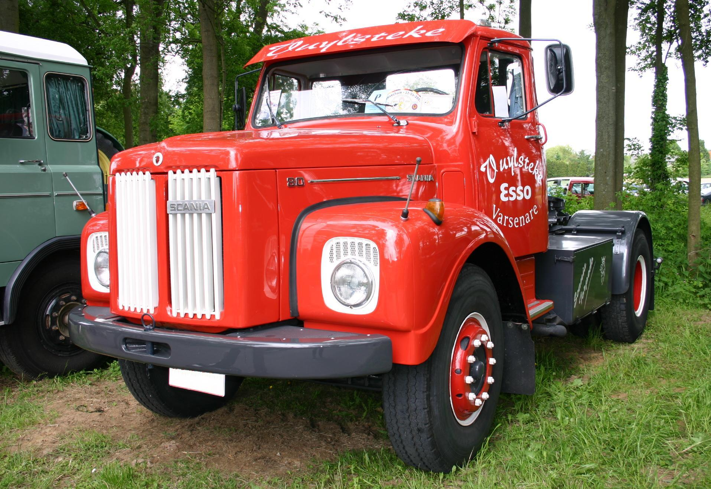

Startsida Kontakta Oss Våra produkter Kontakt Formulär Media
|  |
Lastbil deluxe 1973 |
Lastbilen som har varit hjärtat för vårt företag sedan start. Får alltid jobbet gjort oavsett vad som behövs göras. 700hk dieselmotor utan avgasfilter för extra påverkan på miljön. |
Pris: 200/h eller 2000 köp |
Isbrytaren Patrik |
Isbrytaren Patrik. Ja, vad kan man säga. Riktig pärla när det kommer till att bryta is i Stockholmsskärgård. Inte alltid att den startar, men när den väl gör det, stannar den aldrig. 20 000hk och det krävs 10 personer för att driva motorn. |
Pris: 10 000 kr/h |
|
Lastmaskinen |
Lastmaskinen från gällivare. Liten men effektiv och startar alltid, men allra bäst i 30- grader. Oavsett behov så får lastmaskinen det gjort. Frakta en båt? Inga problem! Gräva en grund? Absolut! Lastmaskinen säger aldrig nej. |
Pris: 2000kr/h |